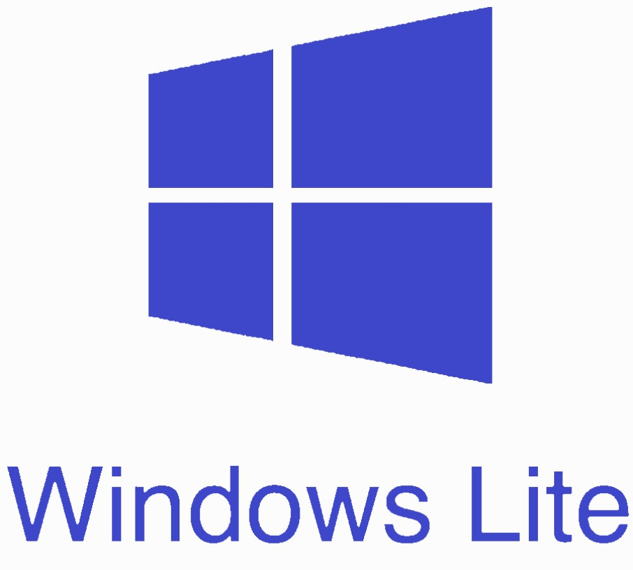

WINDOWS LITE OS

Windows Lite – облегченная версия актуальной операционной системы от Microsoft. Поскольку Windows 10 имеет проблемы с оптимизацией и подходит далеко не для всех бюджетных устройств, компания решила разработать специальную ОС для планшетов, слабых ноутбуков и девайсов с двумя экранами.